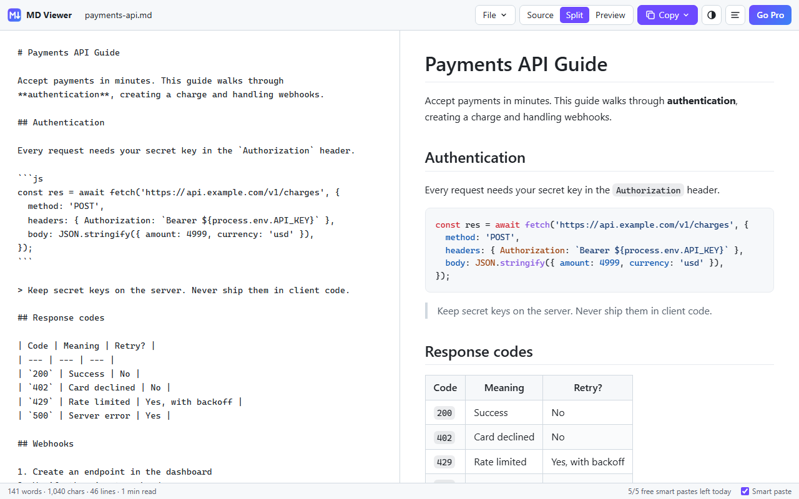

MD Viewer
Read, copy & paste Markdown in Chrome.
Read:
any .md file, local or online, renders instantly with syntax highlighting
Copy anywhere:
as Markdown, rich text (Docs, Gmail, Word, Notion), HTML or plain text
Paste as Markdown:
paste from any web page or doc and get clean Markdown
Right-click:
copy any selection or convert a whole page to Markdown
